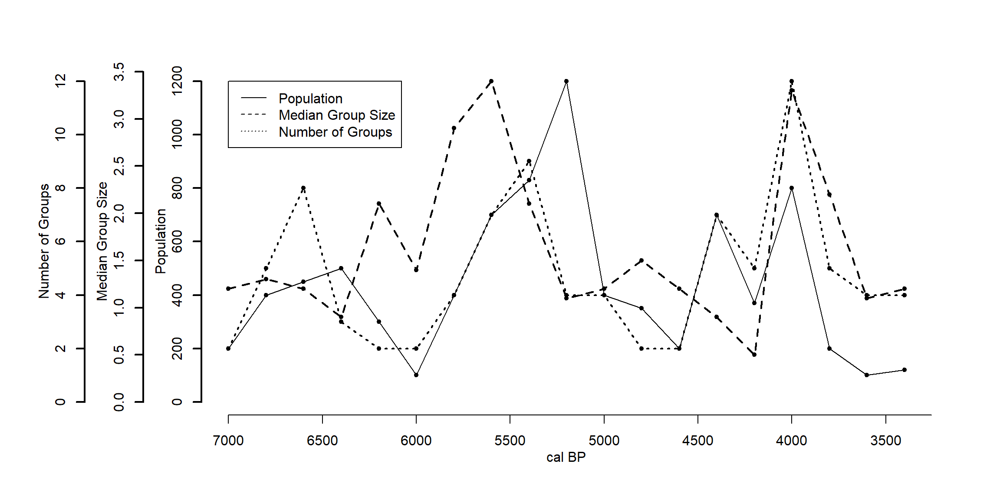

Nguyên tắc chung khi vẽ nhiều trục Y hay X là ta sẽ set par(new = TRUE) để tạo ra 1 plot mới dán đè lên plot hiện tại với scale trục Y mới, ta thay đổi vị trí các trục Y bằng lệnh axis().
#Create Datasettime<-seq(7000,3400,-200)pop<-c(200,400,450,500,300,100,400,700,830,1200,400,350,200,700,370,800,200,100,120)grp<-c(2,5,8,3,2,2,4,7,9,4,4,2,2,7,5,12,5,4,4)med<-c(1.2,1.3,1.2,0.9,2.1,1.4,2.9,3.4,2.1,1.1,1.2,1.5,1.2,0.9,0.5,3.3,2.2,1.1,1.2)#Define Margins. The trick is to use give as much space possible on the left margin (second value)par(mar=c(5, 12, 4, 4) +0.1)#Plot the first time series. Notice that you don't have to draw the axis nor the labelsplot(time, pop, axes=F, ylim=c(0,max(pop)), xlab="", ylab="",type="l",col="black", main="",xlim=c(7000,3400))points(time,pop,pch=20,col="black")axis(2, ylim=c(0,max(pop)),col="black",lwd=2)mtext(2,text="Population",line=2)#Plot the second time series. The command par(new=T) is handy here. #If you just need to plot two timeseries, you could also use the right vertical axis as well. #In that case you have to substitute "2" with "4" in the functions axis() and mtext(). #Notice that in both functions lines is increased so that the new axis and #its label is placed to the left of the first one. #You don't need to increase the value if you use the right vertical axis.par(new=T)plot(time, med, axes=F, ylim=c(0,max(med)), xlab="", ylab="", type="l",lty=2, main="",xlim=c(7000,3400),lwd=2)axis(2, ylim=c(0,max(med)),lwd=2,line=3.5)points(time, med,pch=20)mtext(2,text="Median Group Size",line=5.5)#Plot the third time series. Again the line parameter are both further increased.par(new=T)plot(time, grp, axes=F, ylim=c(0,max(grp)), xlab="", ylab="", type="l",lty=3, main="",xlim=c(7000,3400),lwd=2)axis(2, ylim=c(0,max(grp)),lwd=2,line=7)points(time, grp,pch=20)mtext(2,text="Number of Groups",line=9)#We can now draw the X-axis, which is of course shared by all the three time-series.axis(1,pretty(range(time),10))mtext("cal BP",side=1,col="black",line=2)#And then plot the legend.legend(x=7000,y=12,legend=c("Population","Median Group Size","Number of Groups"),lty=c(1,2,3))

4.2 Vẽ đồ thị nhiều trục Y
Sử dụng dataset airquality. Daily readings of the following air quality values for May 1, 1973 (a Tuesday) to September 30, 1973.
Ozone: Mean ozone in parts per billion from 1300 to 1500 hours at Roosevelt Island
Solar.R: Solar radiation in Langleys in the frequency band 4000–7700 Angstroms from 0800 to 1200 hours at Central Park
Wind: Average wind speed in miles per hour at 0700 and 1000 hours at LaGuardia Airport
Temp: Maximum daily temperature in degrees Fahrenheit at La Guardia Airport.
A data frame with 153 observations on 6 variables.
[,1] Ozone numeric Ozone (ppb)
[,2] Solar.R numeric Solar R (lang)
[,3] Wind numeric Wind (mph)
[,4] Temp numeric Temperature (degrees F)
[,5] Month numeric Month (1–12)
[,6] Day numeric Day of month (1–31)
Source: The data were obtained from the New York State Department of Conservation (ozone data) and the National Weather Service (meteorological data).
{kind=link}